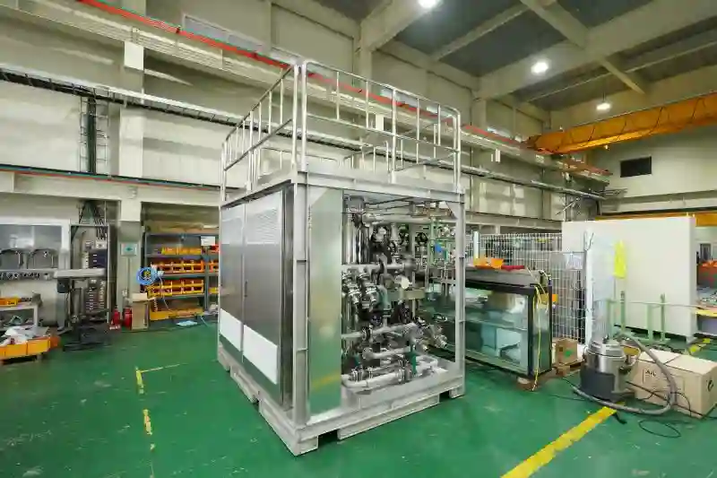

| 산업용 UV-AOP 시스템 사양 |
|---|
| 램프 형식 | 중압 |
| 램프당 입력 전력 | 4 kW, 8 kW, 10 kW, 12 kW, 24 kW |
| 세정 시스템 | 운전 중 기계적 세척 / 운전 중 기계·화학 병행 세척 (옵션) |
| 반응조 재질 | STS 316 / 비금속 |
| 사용 압력 | 145 psi (10 bar) |
| 최대 수온 | 40°C (104°F) |
| 최대 운전 온도 | 55°C (131°F) |
| 램프 모니터링 | DVGW W294 UV 센서 |
| 제어반 사양 |
|---|
| 재질 | 도장 강판 / STS 304 |
| 제어 장치 | PLC |
| 전압 / 주파수 | 360 ~ 480 ±10% / 50/60 Hz |
| 운전 온도 | 0°C~50°C (32°F~120°F) |
| 설치 장소 | 실내 및 실외 |
| 안정기 형식 | 출력 가변형 전자식 안정기 |


개인정보 처리방침: Neotec UV는 기업 고객의 상담 및 전문 서비스 문의 처리를 위해 필요한 최소한의 개인정보만 수집합니다.
수집하는 개인정보 항목: 문의 유형, 이름, 휴대전화번호, 이메일 주소 및 문의 내용
개인정보 수집 및 이용 목적: 고객 문의 검토 및 답변, 엔지니어링 상담 지원, 지속적인 고객 커뮤니케이션을 위한 상담 이력 관리
개인정보 보유 및 이용 기간: 제출된 모든 개인정보는 접수일로부터 2년간 안전하게 보관되며, 보유 기간이 경과하면 영구적으로 파기됩니다.
Cookie Policy: Neotec UV는 쿠키 데이터를 수집, 저장 또는 추적하지 않습니다. 당사 웹사이트는 정적인 정보 제공을 목적으로 설계되었으며, 사용자 추적이나 세션 정보를 저장하지 않는 독립적인 브라우징 환경을 제공합니다.